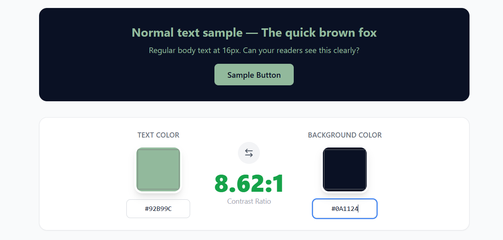

A sigla ”WCAG” vem do inglês "Web Content Accessibility Guidelines" e consiste em um conjunto de recomendações para tornar conteúdos digitais acessíveis a usuários com deficiências visuais, auditivas, motoras ou cognitivas, garantindo que todos possam navegar e interagir com autonomia O objetivo é criar experiências digitais inclusivas, envolvendo descrição de imagens, contraste adequado das cores, navegação por teclado e uso de intérpretes de Libras ou legendas descritivas, e assim garantir a confiança de clientes especiais, como daltônicos e outros grupos
para comprovar a "inclusão" no Site, eu coloquei a paleta de cores em um Site para verificar o contraste, o resultado pode ser visto abaixo
